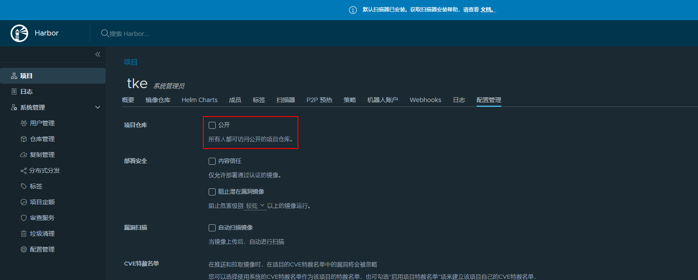
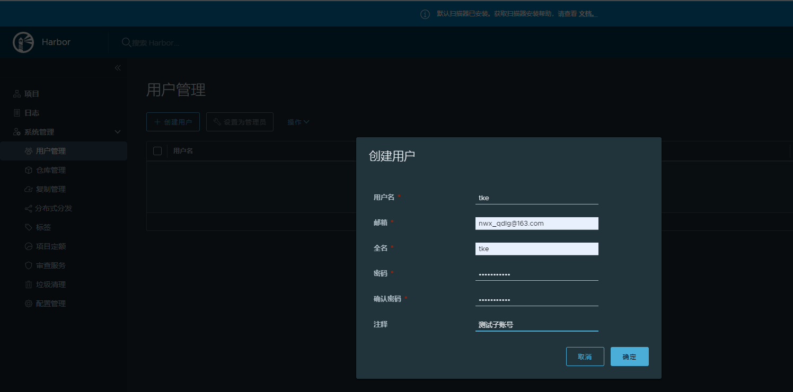
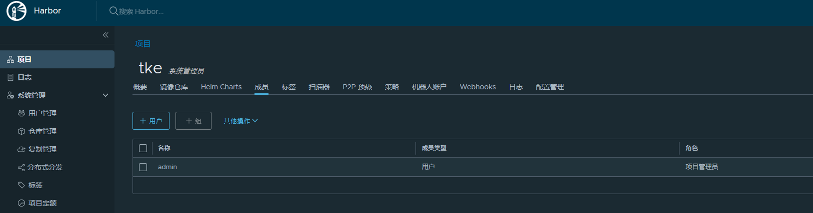

# If Harbor is deployed behind the proxy, set it as the URL of proxy externalURL:https://harbor.tke.niewx.cn# 配置上需要给harbor访问的域名
......
persistence: enabled:true # Setting it to "keep" to avoid removing PVCs during a helm delete # operation. Leaving it empty will delete PVCs after the chart deleted # (this does not apply for PVCs that are created for internal database # and redis components, i.e. they are never deleted automatically) resourcePolicy:"keep" persistentVolumeClaim: registry: # Use the existing PVC which must be created manually before bound, # and specify the "subPath" if the PVC is shared with other components existingClaim:"" # Specify the "storageClass" used to provision the volume. Or the default # StorageClass will be used(the default). # Set it to "-" to disable dynamic provisioning storageClass:"" subPath:"" accessMode:ReadWriteOnce size:10Gi# 根据需要修改磁盘大小，腾讯云上cbs盘最小要求10G chartmuseum: existingClaim:"" storageClass:"" subPath:"" accessMode:ReadWriteOnce size:10Gi# 根据需要修改磁盘大小，腾讯云上cbs盘最小要求10G jobservice: existingClaim:"" storageClass:"" subPath:"" accessMode:ReadWriteOnce size:10Gi# 根据需要修改磁盘大小，腾讯云上cbs盘最小要求10G # If external database is used, the following settings for database will # be ignored database: existingClaim:"" storageClass:"" subPath:"" accessMode:ReadWriteOnce size:10Gi# 根据需要修改磁盘大小，腾讯云上cbs盘最小要求10G # If external Redis is used, the following settings for Redis will # be ignored redis: existingClaim:"" storageClass:"" subPath:"" accessMode:ReadWriteOnce size:10Gi# 根据需要修改磁盘大小，腾讯云上cbs盘最小要求10G trivy: existingClaim:"" storageClass:"" subPath:"" accessMode:ReadWriteOnce size:10Gi# 根据需要修改磁盘大小，腾讯云上cbs盘最小要求10G ..........
[root@VM-0-13-centos harbor]# docker login harbor.tke.niewx.cn Authenticating with existing credentials... Stored credentials invalid or expired Username (admin): admin Password: WARNING! Your password will be stored unencrypted in /root/.docker/config.json. Configure a credential helper to remove this warning. See https://docs.docker.com/engine/reference/commandline/login/#credentials-store
注意: 这里我们在上传镜像的时候遇到了一个问题，一般镜像文件比较大，推送可能会报错413 Request Entity Too Large，原来是上传文件太大，导致上传失败，这里我们在ingress修改下上传body大小就可以了，在ingress注解中加入就可以正常推送了 nginx.ingress.kubernetes.io/proxy-body-size: 1000m
下载镜像
我们在其他机器上拉取镜像试试
1 2 3 4
[root@VM-0-3-centos ~]# docker pull harbor.tke.niewx.cn/tke/nginx:latest latest: Pulling from tke/nginx Digest:sha256:13e4551010728646aa7e1b1ac5313e04cf75d051fa441396832fcd6d600b5e71 Status: Downloaded newer image for harbor.tke.niewx.cn/tke/nginx:latest
因为我们的镜像仓库是公开的，不需要登录也可以拉取，这里我们配置成私有的，需要先登录才能拉取镜像

1 2 3 4 5 6 7 8 9 10 11 12 13
[root@VM-0-3-centos ~]# docker pull harbor.tke.niewx.cn/tke/nginx:latest Error response from daemon: unauthorized: unauthorized to access repository: tke/nginx, action: pull: unauthorized to access repository: tke/nginx, action: pull [root@VM-0-3-centos ~]# docker login harbor.tke.niewx.cn -u admin Password: WARNING! Your password will be stored unencrypted in /root/.docker/config.json. Configure a credential helper to remove this warning. See https://docs.docker.com/engine/reference/commandline/login/#credentials-store
Login Succeeded [root@VM-0-3-centos ~]# docker pull harbor.tke.niewx.cn/tke/nginx:latest latest: Pulling from tke/nginx Digest: sha256:13e4551010728646aa7e1b1ac5313e04cf75d051fa441396832fcd6d600b5e71 Status: Downloaded newer image for harbor.tke.niewx.cn/tke/nginx:latest
这里我们将镜像仓库改成私有的就需要登录才能拉取镜像。
创建子用户访问镜像仓库
我们创建一个tke的子账号，但是没有加入到项目中，我们看看能否拉取镜像


1 2 3 4 5 6 7 8 9 10 11 12 13
[root@VM-0-3-centos ~]# docker pull harbor.tke.niewx.cn/tke/nginx:latest latest: Pulling from tke/nginx Digest: sha256:13e4551010728646aa7e1b1ac5313e04cf75d051fa441396832fcd6d600b5e71 Status: Downloaded newer image for harbor.tke.niewx.cn/tke/nginx:latest [root@VM-0-3-centos ~]# docker login harbor.tke.niewx.cn -u tke Password: WARNING! Your password will be stored unencrypted in /root/.docker/config.json. Configure a credential helper to remove this warning. See https://docs.docker.com/engine/reference/commandline/login/#credentials-store
Login Succeeded [root@VM-0-3-centos ~]# docker pull harbor.tke.niewx.cn/tke/nginx:latest Error response from daemon: unauthorized: unauthorized to access repository: tke/nginx, action: pull: unauthorized to access repository: tke/nginx, action: pull